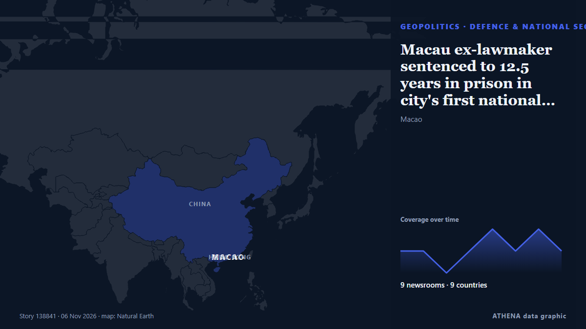

Defence & national security
SponsoredPresented by  Cybernetics and Artificial Intelligence Lab Welcome to the Cybernetics and Artificial Intelligence Laboratory, established at the Department of Business Administration of the National and Kapodistrian University of Athens. The lab is headed by Professor Dimitrios Thomakos. The lab aims to do research that can be published in top venues. Our research uses tools and methods of Artificial Intelligence, and lies in the following areas: - Forecasting - Decision making - Cyber security - Finance We are always looking forward to collaborating with exceptional students!
Cybernetics and Artificial Intelligence Lab Welcome to the Cybernetics and Artificial Intelligence Laboratory, established at the Department of Business Administration of the National and Kapodistrian University of Athens. The lab is headed by Professor Dimitrios Thomakos. The lab aims to do research that can be published in top venues. Our research uses tools and methods of Artificial Intelligence, and lies in the following areas: - Forecasting - Decision making - Cyber security - Finance We are always looking forward to collaborating with exceptional students!
| 24 Oct | 0 |
|---|---|
| 25 Oct | 0 |
| 26 Oct | 0 |
| 27 Oct | 1 |
| 28 Oct | 0 |
| 29 Oct | 0 |
| 30 Oct | 1 |
| 31 Oct | 0 |
| 1 Nov | 0 |
| 2 Nov | 5 |
| 3 Nov | 9 |
| 4 Nov | 4 |
| 5 Nov | 2 |
| 6 Nov | 2 |

Macau ex-lawmaker sentenced to 12.5 years in prison in city's first national security trial
Au Kam San was arrested in July 2025 for collusion with foreign forces to endanger national security and tried behind closed doors. from CNA (Channel NewsAsia)
Democrats win governorships in Texas and other GOP-controlled states in rebuke to Republicans
The wins delivered a majority of governorships to Democrats for the first time in two decades, allowing them to put up a stronger defense against Trump's second-term agenda. from PBS NewsHour
Thailand bans textbook on national security grounds
The second edition of the 'Routledge Handbook of Contemporary Thailand' was edited by Japan-based academic and Thai monarchy critic Pavin Chachavalpongpun. from Free Malaysia Today
Fairbanks Morse Defense unveils AutoHook for Fully Autonomous Vessel Recovery at EURONAVAL 2026
Developed by FMD’s Vestdavit, the industry-first interface requires zero human intervention and is designed for interoperability among allied navies. from Cyprus Shipping News
Saudi, Syrian defence ministries sign cooperation agreement, SPA reports
CAIRO, Nov 4 - Saudi Arabia and Syria signed a cooperation agreement between the two countries' defense ministries on Wednesday, Saudi state news agency SPA reported, as Yemen's Iran-aligned Houthi… from The Straits Times
N. Korea says it test-fired new air defense missile system
SEOUL, Nov. 5 (Yonhap) -- North Korea said Thursday it test-fired a newly design... from Yonhap (English)
Israeli SPIKE Missiles for Cyprus National Guard – Boosting Deterrence Capabilities
NICOSIA – “For Cyprus, SPIKE missiles make a significant contribution to our overall deterrence capabilities,” Deputy Chief of the National Guard Neophytos Pachoulides said during a presentation of… from The National Herald
Defence min inks Rs 53,866cr deal with GRSE & GSL for 8 next-gen corvettes for Navy
The Indian Defence Ministry signed contracts with two shipyards for constructing eight next generation corvettes. from Times of India
N. Korea's Kim inspects Nampho shipyard, calls for rapid naval buildup
SEOUL, Nov. 4 (Yonhap) -- North Korean leader Kim Jong-un has visited the Nampho... from Yonhap (English)
Iran will not stand idle if US uses nuclear weapons, deputy FM warns
Iran’s Deputy Foreign Minister for Legal and International Affairs Kazem Gharibabadi warned that any decision to use nuclear weapons against Iran would have consequences far beyond the region. from AzerNews
Thyssenkrupp CEO says Canada submarine contest with Hanwha was 'very close'
Thyssenkrupp CEO Miguel Lopez acknowledged the fierce competition between its naval shipbuilding arm TKMS and South Korea’s Hanwha Ocean in Canada’s recent submarine procurement contest, while… from Korea Herald
Launch ceremony set for latest indigenously-built attack submarine
SEOUL, Nov. 3 (Yonhap) -- The Navy was set to hold a launching ceremony Tuesday ... from Yonhap (English)
Russian Defense Minister Hails ‘Unprecedented’ Beijing Ties on China Visit
Russian Defense Minister said Moscow’s strategic partnership with Beijing had reached an “unprecedentedly high level” during talks in China. from Kyiv Post
Hanwha names new president of US shipyard in Philadelphia amid expansion
South Korea's Hanwha Group has appointed a new president of its Philadelphia shipyard in the United States, as the conglomerate seeks to expand its U.S. naval shipbuilding operations, according to… from The Korea Times
US said to plan fresh NATO push for Ukraine arms deliveries
The US has even kept weapons flowing to Ukraine when allied funding has lagged behind the pace of US deliveries. from The Straits Times
US response to Iran’s demands was not convincing: Rezaei
Iranian security chief: US response to demands 'not convincing' The US response to Iran's demands was not convincing, Iran's security chief Mohsen Rezaei said in a post on X on Tuesday, adding that… from Middle East Eye
Saudi defence minister and Hegseth discuss latest Houthi attacks
RIYADH: Saudi Defense Minister Prince Khalid bin Salman held separate phone calls with his Japanese counterpart, Shinjiro Koizumi, and Australian Deputy Prime Minister and Defense Minister Richard… from Arab News
Indian Navy Rescues 20 Crew Members From Hijacked Iranian Vessel off Somalia
Airborne commandos recapture fishing boat seized by pirates as attacks off the Somali coast rise to their highest level since 2013. from Kurdistan24 (English)
Hanwha Philly Shipyard secures first US Navy shipbuilding contract
Hanwha Defense USA has secured its first US Navy shipbuilding contract after being selected by TOTE Services to construct a Medium Landing Ship (LSM) at Hanwha Philly Shipyard. from Container News